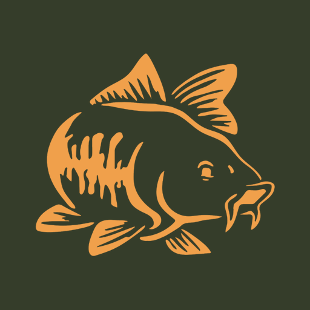

De app werkt op elke telefoon, zonder App Store en zonder accounts voor de vissers. Elke organisatie krijgt een eigen omgeving met eigen adres, bijvoorbeeld viswedstrijdapp.nl/naam. Alle prijzen zijn inclusief hosting, updates en hulp bij de eerste wedstrijd.
Eén wedstrijd, tot 30 deelnemers. Geen opstartkosten: aanvragen, betalen en vissen.
Eigen omgeving met eigen adres, onbeperkt wedstrijden, tot 20 deelnemers per wedstrijd. Ideaal voor een vaste visgroep.
| Jaarabonnement | Deelnemers | |
|---|---|---|
| Klein | tot 25 | € 99 /jr |
| Middel | tot 60 | € 169 /jr |
| Groot | onbeperkt | € 249 /jr |
Eerst zien, dan geloven? De eerste wedstrijd proberen jullie gratis. Wij zetten alles klaar en denken mee tijdens de wedstrijddag.
Betalen gaat eenvoudig: je ontvangt een factuur met iDEAL-betaallink (vriendengroepen krijgen de betaallink gewoon via WhatsApp). Na betaling staat de omgeving dezelfde week klaar. Abonnementen lopen per jaar en stoppen automatisch als je niet verlengt; oude wedstrijden blijven dan gewoon terug te kijken. Prijswijzigingen voorbehouden.